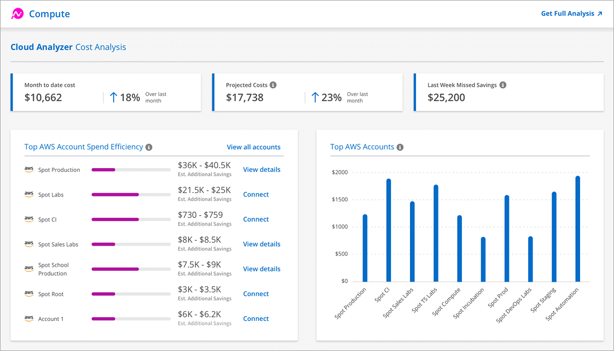
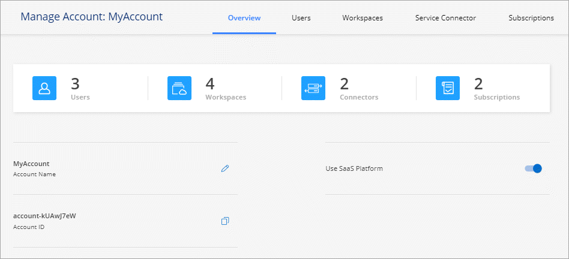
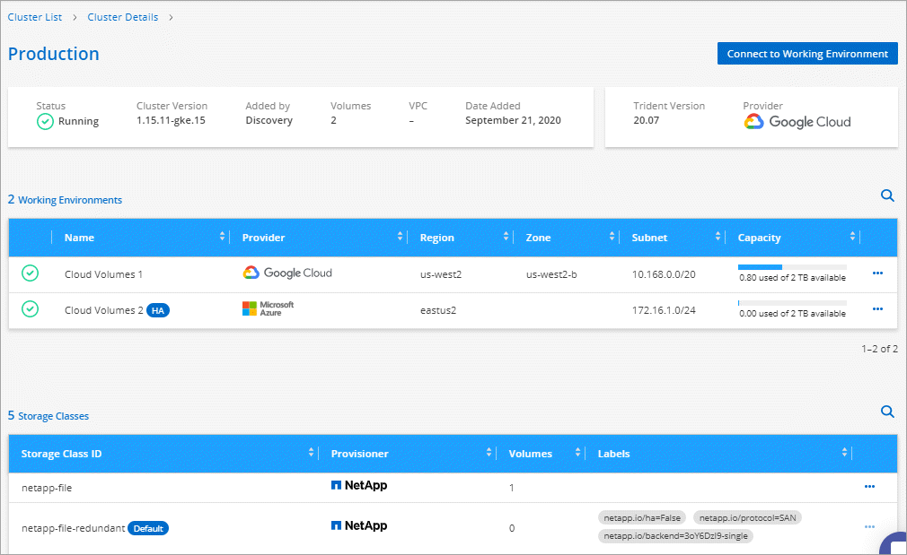
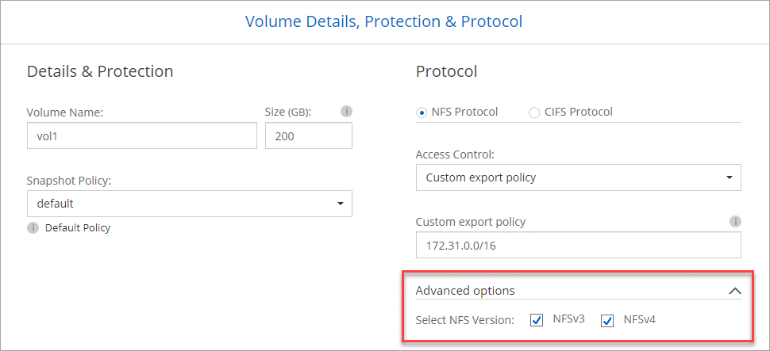

Note di rilascio
Note di rilascio
Novità di Cloud Manager 3.8
 Suggerisci modifiche
Suggerisci modifiche
In genere, Cloud Manager introduce una nuova release ogni mese per offrire nuove funzionalità, miglioramenti e correzioni di bug.

|
Cerchi una release precedente?"Novità del 3.7" "Novità del 3.6" "Novità del 3.5" |
Nuovo provider Terraform (19 ottobre 2020)
Abbiamo sviluppato un nuovo provider di terraform che i team DevOps possono utilizzare con Cloud Manager per automatizzare e integrare Cloud Volumes ONTAP con l'infrastruttura come codice.
Aggiornamento di Cloud Manager 3.8.9 (18 ottobre 2020)
Sfruttando "Spot's Cloud Analyzer", Cloud Manager può ora fornire un'analisi dei costi di alto livello delle spese di calcolo del cloud e identificare i potenziali risparmi. Queste informazioni sono disponibili nel servizio Compute di Cloud Manager. "Scopri di più".

Aggiornamento di Cloud Manager 3.8.9 (13 ottobre 2020)
Abbiamo rilasciato due aggiornamenti di Cloud Tiering:
-
Le licenze per il Cloud Tiering sono ora disponibili in Cloud Manager.
Paga il tiering dei dati da un cluster ONTAP on-premise al cloud attraverso un abbonamento pay-as-you-go, una licenza di tiering ONTAP denominata FabricPool o una combinazione di entrambi.
-
Il servizio standalone di Cloud Tiering è stato ritirato. Ora dovresti accedere al Cloud Tiering direttamente da Cloud Manager, dove sono disponibili tutte le stesse funzionalità.
Cloud Manager 3.8.9 (4 ottobre 2020)
Miglioramenti della conformità al cloud
-
In Cloud Manager è disponibile un nuovo ruolo Cloud Compliance Viewer.
Gli utenti a cui è stato assegnato questo ruolo possono visualizzare solo le informazioni di conformità e generare report per le aree di lavoro a cui sono autorizzati ad accedere. Non possono gestire le impostazioni di conformità del cloud e non possono accedere ad altre funzionalità e servizi di Cloud Manager. Questo potrebbe essere il ruolo perfetto per il tuo team legale, in modo che possa monitorare i risultati della scansione Cloud Compliance. Vedere "ruoli utente" per ulteriori informazioni.
-
Aggiunto supporto per la scansione degli schemi di database MongoDB e PostgreSQL. Vedere "scansione degli schemi del database" per ulteriori informazioni.
-
I prezzi per la conformità al cloud stanno cambiando a partire dal 7 ottobre.
I primi 1 TB di dati che Cloud Compliance analizza in uno spazio di lavoro di Cloud Manager sono gratuiti. Sono inclusi i dati provenienti da volumi Cloud Volumes ONTAP, volumi Azure NetApp Files, bucket Amazon S3 e schemi di database. È necessario un abbonamento per eseguire la scansione di eventuali dati aggiuntivi dopo aver raggiunto 1 TB. Vedere "prezzi" per ulteriori informazioni.
Miglioramenti di Cloud Volumes Service per AWS
Quando si crea un nuovo volume, è possibile scegliere di basarlo su una copia Snapshot esistente di un altro volume.
Integrazione di Cloud Sync
Il servizio Cloud Sync di NetApp è ora disponibile all'interno di Cloud Manager. Cloud Sync offre un metodo semplice, sicuro e automatizzato per migrare i dati da qualsiasi destinazione di origine a qualsiasi destinazione di destinazione, nel cloud o on-premise. "Scopri di più".
Miglioramenti alla gestione degli account
Abbiamo aggiunto altri modi per gestire il tuo account.
-
È ora disponibile una panoramica delle risorse del tuo account.
È possibile visualizzare rapidamente il numero di utenti, aree di lavoro, connettori e sottoscrizioni nel proprio account.
-
È possibile modificare il nome dell'account.
-
È possibile copiare l'ID account, l'ID area di lavoro o l'ID connettore.
La copia di questi ID aiuterà con le funzionalità di automazione che stiamo pianificando.
-
È possibile disattivare l'utilizzo della piattaforma SaaS.
Si consiglia di non disattivare la piattaforma SaaS a meno che non sia necessario per rispettare le policy di sicurezza della propria azienda. La disattivazione della piattaforma SaaS limita la tua capacità di utilizzare i servizi cloud integrati di NetApp. "Scopri di più".

Modifiche per le regioni governative
Se si implementa un connettore in un'area AWS GovCloud, Azure Gov o Azure DoD, l'accesso a Cloud Manager è ora disponibile solo tramite l'indirizzo IP host di un connettore. L'accesso alla piattaforma SaaS è disattivato per l'intero account.
Ciò significa che solo gli utenti con privilegi che possono accedere al VPC/VNET interno dell'utente finale possono utilizzare l'interfaccia utente o l'API di Cloud Manager.
Aggiornamento di Cloud Manager 3.8.8 (22 settembre 2020)
Abbiamo migliorato il servizio Kubernetes per semplificarne l'utilizzo e fornire funzionalità aggiuntive:
-
Abbiamo semplificato la scoperta dei cluster Kubernetes in esecuzione nel servizio Kubernetes gestito dal tuo cloud provider.
Basta fare clic su Discover Clusters e Cloud Manager rileverà i cluster gestiti utilizzando le autorizzazioni del provider cloud già fornite.
-
È ora possibile visualizzare ulteriori informazioni su un cluster Kubernetes scoperto, tra cui lo stato, il numero di volumi, le classi di storage e altro ancora.

-
Abbiamo aggiunto il controllo delle risorse e degli errori per garantire la disponibilità della comunicazione tra il cluster e Cloud Volumes ONTAP. Se non lo è, ti faremo sapere.
Si noti che l'account di servizio per un connettore richiede le seguenti autorizzazioni per rilevare e gestire i cluster Kubernetes in esecuzione in Google Kubernetes Engine (GKE):
- container.*Aggiornamento di Cloud Manager 3.8.8 (10 settembre 2020)
I seguenti miglioramenti sono disponibili quando si implementa Global file cache tramite Cloud Manager:
-
Una coppia Cloud Volumes ONTAP ha in AWS è ora supportata come piattaforma di storage back-end per lo storage centrale.
-
È possibile implementare più istanze Global file cache Core in un progetto Load Distributed.
Cloud Manager 3.8.8 (9 settembre 2020)
Supporto per Cloud Volumes Service per Google Cloud
-
Aggiungere un ambiente di lavoro per gestire i volumi Cloud Volumes Service per GCP esistenti e creare nuovi volumi. "Scopri come".
-
Creare e gestire volumi NFSv3 e NFSv4.1 per client Linux e UNIX e volumi SMB 3.x per client Windows.
-
Creare, eliminare e ripristinare le snapshot dei volumi.
Backup su cloud ora supporta cluster ONTAP on-premise
Avvia il backup dei dati dai sistemi ONTAP on-premise al cloud. Abilita Backup su cloud negli ambienti di lavoro on-premise per eseguire il backup dei volumi nello storage Azure Blob. "Scopri di più".
Miglioramenti del backup su cloud
Abbiamo rivisto l'interfaccia utente per una migliore usabilità:
-
Pagina dell'elenco dei volumi per visualizzare facilmente i volumi di cui viene eseguito il backup insieme ai backup disponibili
-
Pagina delle impostazioni di backup per visualizzare le impostazioni di backup per ciascun ambiente di lavoro
Miglioramenti della conformità al cloud
-
Possibilità di eseguire la scansione dei dati dai database
Eseguire la scansione dei database per identificare i dati personali e sensibili presenti in ogni schema. I database supportati includono Oracle, SAP HANA e SQL Server (MSSQL). "Scopri di più sulla scansione dei database".
-
Possibilità di eseguire la scansione di volumi DP (Data Protection)
I volumi DP sono volumi di destinazione delle operazioni SnapMirror, in genere dei cluster ONTAP on-premise. Ora puoi identificare facilmente i dati personali e sensibili che risiedono in questi file on-premise. "Scopri come".
Navigazione aggiornata
Abbiamo aggiornato l'intestazione in Cloud Manager per semplificare la navigazione tra i servizi cloud di NetApp.
Fare clic su View All Services (Visualizza tutti i servizi) per aggiungere e rimuovere i servizi che si desidera visualizzare nella navigazione.

Come puoi vedere, abbiamo anche aggiornato i menu a discesa account, Workspace e Connector, in modo da semplificare la visualizzazione delle selezioni correnti.
Miglioramenti dell'amministrazione
-
Ora puoi rimuovere i connettori inattivi da Cloud Manager. "Scopri come".

-
Ora puoi sostituire l'abbonamento Marketplace attualmente associato alle credenziali del tuo cloud provider. Se hai bisogno di modificare l'addebito, questa modifica può aiutarti a assicurarti di ricevere l'addebito tramite l'abbonamento corretto a Marketplace.
Scopri come "In AWS", "In Azure", e. "In GCP".
Aggiornamento delle autorizzazioni Azure richieste (6 agosto 2020)
Per evitare errori di implementazione di Azure, assicurati che la tua policy di Cloud Manager in Azure includa la seguente autorizzazione:
"Microsoft.Resources/deployments/operationStatuses/read"Azure ora richiede questa autorizzazione per alcune implementazioni di macchine virtuali (dipende dall'hardware fisico sottostante utilizzato durante l'implementazione).
Cloud Manager 3.8.7 (3 agosto 2020)
Nuova esperienza software-as-a-service
Abbiamo introdotto un'esperienza software-as-a-service per Cloud Manager. Questa nuova esperienza semplifica l'utilizzo di Cloud Manager e ci consente di fornire funzionalità aggiuntive per la gestione della tua infrastruttura di cloud ibrido.
Cloud Manager include un "Interfaccia basata su SaaS" Integrato con NetApp Cloud Central e connettori che consentono a Cloud Manager di gestire risorse e processi all'interno del tuo ambiente di cloud pubblico. (Il connettore è in realtà lo stesso del software Cloud Manager esistente installato).

|
Nella maggior parte dei casi è necessario un connettore, ma non è necessario utilizzare Azure NetApp Files, Cloud Volumes Service o Cloud Sync da Cloud Manager. |
Come indicato in precedenza in queste note di rilascio, sarà necessario aggiornare il tipo di computer per i connettori per accedere alle nuove funzionalità che offriamo. Cloud Manager richiede di modificare il tipo di macchina. "Scopri di più".
Miglioramenti di Cloud Volumes ONTAP
Sono disponibili due miglioramenti per Cloud Volumes ONTAP.
-
Licenze BYOL multiple per allocare capacità aggiuntiva
È ora possibile acquistare più licenze per un sistema Cloud Volumes ONTAP BYOL per allocare più di 368 TB di capacità. Ad esempio, è possibile acquistare due licenze per allocare fino a 736 TB di capacità a Cloud Volumes ONTAP. Oppure puoi acquistare quattro licenze per ottenere fino a 1.4 PB.
Il numero di licenze che è possibile acquistare per un sistema a nodo singolo o una coppia ha è illimitato.
Tenere presente che i limiti dei dischi possono impedire di raggiungere il limite di capacità utilizzando solo i dischi. È possibile superare il limite di dischi di "tiering dei dati inattivi sullo storage a oggetti". Per informazioni sui limiti dei dischi, fare riferimento a. "Limiti di storage nelle note di rilascio di Cloud Volumes ONTAP".
-
Crittografa i dischi gestiti da Azure utilizzando chiavi esterne
È ora possibile crittografare i dischi gestiti da Azure su sistemi Cloud Volumes ONTAP a nodo singolo utilizzando chiavi esterne di un altro account. Questa funzionalità è supportata tramite API.
È sufficiente aggiungere quanto segue alla richiesta API quando si crea il sistema a nodo singolo:
"azureEncryptionParameters": { "key": <azure id of encryptionset> }Questa funzione richiede nuove autorizzazioni, come mostrato nella più recente "Policy di Cloud Manager per Azure".
"Microsoft.Compute/diskEncryptionSets/read"
Miglioramenti di Azure NetApp Files
Questa versione include diversi miglioramenti nel supporto di Azure NetApp Files.
-
Configurazione Azure NetApp Files
Ora puoi configurare e gestire Azure NetApp Files direttamente da Cloud Manager. "Scopri come".
-
Nuovo supporto del protocollo
È ora possibile creare volumi NFSv4.1 e volumi SMB.
-
Gestione dello snapshot del volume e del pool di capacità
Cloud Manager consente di creare, eliminare e ripristinare snapshot di volumi. È inoltre possibile creare nuovi pool di capacità e specificarne i livelli di servizio.
-
Possibilità di modificare i volumi
È possibile modificare un volume modificandone le dimensioni e gestendo i tag.
Miglioramenti di Cloud Volumes Service per AWS
In Cloud Manager sono stati apportati numerosi miglioramenti a supporto di Cloud Volumes Service per AWS.
-
Nuovo supporto del protocollo
Ora è possibile creare volumi NFSv4.1, volumi SMB e volumi a doppio protocollo. In precedenza era possibile creare e scoprire volumi NFSv3 solo in Cloud Manager.
-
Supporto Snapshot
È possibile creare policy di snapshot per automatizzare la creazione di snapshot di volumi, creare uno snapshot on-demand, ripristinare un volume da uno snapshot, creare un nuovo volume in base a uno snapshot esistente e molto altro ancora. Vedere "Gestione delle snapshot dei volumi cloud" per ulteriori informazioni.
-
Creare il volume iniziale in una regione da Cloud Manager
Prima di questa release, era necessario creare il primo volume in ciascuna regione nell'interfaccia Cloud Volumes Service per AWS. Ora puoi iscriverti a. "Una delle offerte NetApp Cloud Volumes Service sul marketplace AWS" Quindi creare il primo volume da Cloud Manager.
Miglioramenti della conformità al cloud
I seguenti miglioramenti sono ora disponibili per la conformità cloud.
-
Processo di implementazione rivisto per la tua istanza di Cloud Compliance
L'istanza di Cloud Compliance viene configurata e implementata utilizzando una nuova procedura guidata in Cloud Manager. Una volta completata l'implementazione, attivare il servizio per ogni ambiente di lavoro che si desidera sottoporre a scansione.
-
Possibilità di selezionare i volumi da sottoporre a scansione in un ambiente di lavoro
Ora è possibile attivare e disattivare la scansione di singoli volumi in un ambiente di lavoro Cloud Volumes ONTAP o Azure NetApp Files. Se non è necessario eseguire la scansione di determinati volumi per verificarne la conformità, disattivarli.
-
Schede di navigazione per passare rapidamente alla tua area di interesse
Le nuove schede per Dashboard, Investigation e Configuration consentono di accedere più facilmente a queste sezioni.
-
Report HIPAA
È ora disponibile un nuovo report HIPAA (Health Insurance Portability and Accountability Act). Il presente report è stato progettato per aiutare l'organizzazione a rispettare le leggi sulla privacy dei dati HIPAA.
-
Nuovo tipo di dati personali sensibili
Cloud Compliance può ora trovare i codici medici ICD-9-CM nei file.
-
Nuovo tipo di dati personali
Cloud Compliance può ora trovare due nuovi identificatori nazionali nei file: Croatian ID (OIB) e Greek ID.
Miglioramenti del backup su cloud
I seguenti miglioramenti sono ora disponibili per il backup nel cloud.
-
La licenza BYOL (Bring Your Own License) è ora disponibile
Backup su cloud è disponibile solo con una licenza Pay as You Go (PAYGO). Una licenza BYOL consente di acquistare una licenza da NetApp per utilizzare Backup to Cloud per un determinato periodo di tempo e per una quantità massima di spazio di backup. Una volta raggiunto il limite, è necessario rinnovare la licenza.
-
Supporto per volumi DP (Data Protection)
Ora è possibile eseguire il backup e il ripristino dei volumi di protezione dei dati.
Supporto per Global file cache
NetApp Global file cache consente di consolidare silos di file server distribuiti in un unico footprint di storage globale e coerente nel cloud pubblico. In questo modo si crea un file system accessibile a livello globale nel cloud che tutte le ubicazioni distribuite possono utilizzare come se fossero locali.
A partire da questa release, l'istanza Global file cache Management e l'istanza Core possono essere implementate e gestite tramite Cloud Manager. Ciò consente di risparmiare molte ore durante il processo di implementazione iniziale e offre un singolo pannello di controllo tramite Cloud Manager per questo e altri sistemi implementati. Le istanze di Global file cache Edge vengono ancora implementate localmente presso le sedi remote.
Vedere "Panoramica della Global file cache" per ulteriori informazioni.
La configurazione iniziale che può essere implementata utilizzando Cloud Manager deve soddisfare i seguenti requisiti. Altre configurazioni come Cloud Volumes Service, Azure NetApp Files e Cloud Volumes Service per AWS e GCP continuano a essere implementate utilizzando le procedure legacy. "Scopri di più".
-
La piattaforma di storage back-end utilizzata come storage centrale deve essere un ambiente operativo in cui è stata implementata una coppia di Cloud Volumes ONTAP ha in Azure.
Altre piattaforme storage e altri cloud provider non sono attualmente supportati con Cloud Manager, ma possono essere implementati utilizzando procedure di implementazione legacy.
-
Il core GFC può essere implementato solo come istanza autonoma.
Se è necessario utilizzare una progettazione distribuita con carico che include più istanze Core, è necessario utilizzare le procedure legacy.
Questa funzione richiede nuove autorizzazioni, come mostrato nella più recente "Policy di Cloud Manager per Azure".
"Microsoft.Resources/deployments/operationStatuses/read",
"Microsoft.Insights/Metrics/Read",
"Microsoft.Compute/virtualMachines/extensions/write",
"Microsoft.Compute/virtualMachines/extensions/read",
"Microsoft.Compute/virtualMachines/extensions/delete",
"Microsoft.Compute/virtualMachines/delete",
"Microsoft.Network/networkInterfaces/delete",
"Microsoft.Network/networkSecurityGroups/delete",
"Microsoft.Resources/deployments/delete",Un'esperienza migliore richiede un tipo di macchina più potente (15 luglio 2020)
Mentre miglioriamo l'esperienza di Cloud Manager, dovrai aggiornare il tuo tipo di computer per accedere alle nuove funzionalità che offriremo. I miglioramenti includeranno un "Esperienza software-as-a-service per Cloud Manager" e integrazioni di servizi cloud nuove e migliorate.
Cloud Manager richiede di modificare il tipo di macchina.
Ecco alcuni dettagli:
-
Per garantire la disponibilità di risorse adeguate per la corretta funzionalità delle nuove funzionalità di Cloud Manager, abbiamo modificato l'istanza predefinita, la macchina virtuale e il tipo di macchina come segue:
-
AWS: t3.xlarge
-
Azure: DS3 v2
-
GCP: n1-standard-4
Questi formati predefiniti sono quelli minimi supportati "In base ai requisiti di CPU e RAM".
-
-
Nell'ambito di questa transizione, Cloud Manager richiede l'accesso al seguente endpoint per ottenere immagini software dei componenti container per un'infrastruttura Docker:
Assicurati che il firewall consenta l'accesso a questo endpoint da Cloud Manager.
Cloud Manager 3.8.6 (6 luglio 2020)
Supporto per volumi iSCSI
Cloud Manager consente ora di creare volumi iSCSI per cluster Cloud Volumes ONTAP e ONTAP on-premise direttamente dall'interfaccia utente.
Quando si crea un volume iSCSI, Cloud Manager crea automaticamente un LUN. Abbiamo semplificato la creazione di un solo LUN per volume, per cui non è necessario alcun intervento di gestione. Dopo aver creato il volume, "Utilizzare IQN per connettersi al LUN dagli host".
|
|
È possibile creare ulteriori LUN da System Manager o dall'interfaccia CLI. |
Supporto per la policy di tiering completo
È ora possibile scegliere il criterio di tutti i livelli quando si crea o si modifica un volume per Cloud Volumes ONTAP. Quando si utilizza la policy di tiering completo, i dati vengono immediatamente contrassegnati come cold e tiered per lo storage a oggetti il più presto possibile. "Scopri di più sul tiering dei dati".
Transizione di Cloud Manager a SaaS (22 giugno 2020)
Stiamo introducendo un'esperienza software-as-a-service per Cloud Manager. Questa nuova esperienza semplifica l'utilizzo di Cloud Manager e ci consente di fornire funzionalità aggiuntive per la gestione della tua infrastruttura di cloud ibrido. "Scopri di più".
Cloud Manager 3.8.5 (31 maggio 2020)
È richiesto un nuovo abbonamento in Azure Marketplace
Un nuovo abbonamento è disponibile in Azure Marketplace. Questo abbonamento una tantum è necessario per implementare Cloud Volumes ONTAP 9.7 PAYGO (ad eccezione del sistema in prova gratuita per 30 giorni). L'abbonamento ci consente inoltre di offrire funzionalità aggiuntive per Cloud Volumes ONTAP PAYGO e BYOL. Da questo abbonamento ti verrà addebitato il costo di ogni sistema PAYGO Cloud Volumes ONTAP creato e di ogni funzione aggiuntiva abilitata.
Cloud Manager ti chiederà di iscriverti a questa offerta al momento dell'implementazione di un nuovo sistema Cloud Volumes ONTAP (9.7 P1 o successivo).

Miglioramenti del backup su cloud
I seguenti miglioramenti sono ora disponibili per il backup nel cloud.
-
In Azure, è ora possibile creare un nuovo gruppo di risorse o selezionare un gruppo di risorse esistente invece di fare in modo che Cloud Manager ne crei uno per te. Non è possibile modificare il gruppo di risorse dopo aver attivato Backup su cloud.
-
In AWS, è ora possibile eseguire il backup delle istanze di Cloud Volumes ONTAP che risiedono su un account AWS diverso rispetto all'account AWS di Cloud Manager.
-
Sono ora disponibili opzioni aggiuntive quando si seleziona la pianificazione di backup per i volumi. Oltre alle opzioni di backup giornaliere, settimanali e mensili, è ora possibile selezionare una delle policy definite dal sistema che fornisce policy di combinazione come 30 backup giornalieri, 13 settimanali e 12 mensili.
-
Dopo aver eliminato tutti i backup di un volume, è possibile iniziare a creare nuovamente i backup per tale volume. Questo era un limite noto nella release precedente.
Miglioramenti della conformità al cloud
Per la conformità al cloud sono disponibili i seguenti miglioramenti.
-
È ora possibile eseguire la scansione dei bucket S3 che si trovano in account AWS diversi rispetto all'istanza Cloud Compliance. Devi solo creare un ruolo sul nuovo account in modo che l'istanza esistente di Cloud Compliance possa connettersi a tali bucket. "Scopri di più".
Se hai configurato Cloud Compliance prima della release 3.8.5, dovrai modificare la versione esistente "Ruolo IAM per l'istanza Cloud Compliance" per utilizzare questa funzionalità.
-
È ora possibile filtrare il contenuto della pagina di analisi per visualizzare solo i risultati che si desidera visualizzare. I filtri includono ambiente di lavoro, categoria, dati privati, tipo di file, data dell'ultima modifica, E se le autorizzazioni dell'oggetto S3 sono aperte all'accesso pubblico.

-
Ora puoi attivare e disattivare Cloud Compliance in un ambiente di lavoro direttamente dalla scheda Cloud Compliance.
Aggiornamento di Cloud Manager 3.8.4 (10 maggio 2020)
Abbiamo rilasciato un miglioramento di Cloud Manager 3.8.4.
Integrazione di Cloud Insights
Sfruttando il servizio Cloud Insights di NetApp, Cloud Manager ti offre informazioni sullo stato di salute e sulle performance delle tue istanze di Cloud Volumes ONTAP e ti aiuta a risolvere i problemi e ottimizzare le performance del tuo ambiente di cloud storage. "Scopri di più".
Cloud Manager 3.8.4 (3 maggio 2020)
Cloud Manager 3.8.4 include i seguenti miglioramenti.
Miglioramenti del backup su cloud
Sono ora disponibili i seguenti miglioramenti per il backup nel cloud (precedentemente chiamato Backup in S3 per AWS):
-
Backup su storage Azure Blob
Backup su cloud è ora disponibile per Cloud Volumes ONTAP in Azure. Backup su cloud offre funzionalità di backup e ripristino per la protezione e l'archiviazione a lungo termine dei dati del cloud. "Scopri di più".
-
Eliminazione dei backup
Ora puoi eliminare tutti i backup di un volume specifico direttamente dall'interfaccia di Cloud Manager. "Scopri di più".
Cloud Manager 3.8.3 (5 aprile 2020)
Integrazione del cloud tiering
Il servizio Cloud Tiering di NetApp è ora disponibile all'interno di Cloud Manager. Il tiering del cloud ti consente di tierare i dati da un cluster ONTAP on-premise a uno storage a oggetti a basso costo nel cloud. In questo modo si libera spazio di storage ad alte performance sul cluster per un maggior numero di carichi di lavoro.
Migrazione dei dati a Azure NetApp Files
Ora puoi migrare i dati NFS o SMB su Azure NetApp Files direttamente da Cloud Manager. Le sincronizzazioni dei dati sono basate sul servizio Cloud Sync di NetApp.
Miglioramenti della conformità al cloud
I seguenti miglioramenti sono ora disponibili per la conformità cloud.
-
30 giorni di prova gratuita per Amazon S3
È ora disponibile una versione di prova gratuita di 30 giorni per eseguire la scansione dei dati Amazon S3 con Cloud Compliance. Se in precedenza hai abilitato Cloud Compliance su Amazon S3, la tua prova gratuita di 30 giorni è attiva a partire da oggi (5 aprile 2020).
È necessario un abbonamento a AWS Marketplace per continuare la scansione di Amazon S3 al termine della prova gratuita. "Scopri come iscriverti".
-
Nuovo tipo di dati personali
Cloud Compliance può ora trovare un nuovo identificativo nazionale nei file: Brazilian ID (CPF).
-
Supporto per ulteriori categorie di metadati
La conformità al cloud è ora in grado di classificare i tuoi dati in nove categorie di metadati aggiuntive. "Consulta l'elenco completo delle categorie di metadati supportate".
Miglioramenti del backup su S3
Sono ora disponibili i seguenti miglioramenti per il servizio Backup in S3.
-
S3 Lifecycle policy per i backup
I backup iniziano con la classe di storage Standard e passano alla classe di storage Standard-infrequent Access dopo 30 giorni.
-
Eliminazione dei backup
È ora possibile eliminare i backup utilizzando un'API Cloud Manager. "Scopri di più".
-
Bloccare l'accesso pubblico
Cloud Manager ora abilita "Funzione di accesso pubblico a blocchi Amazon S3" Nel bucket S3 in cui sono memorizzati i backup.
Volumi iSCSI che utilizzano API
Le API Cloud Manager consentono ora di creare volumi iSCSI. "Visualizza un esempio qui".
Cloud Manager 3.8.2 (1 marzo 2020)
Ambienti di lavoro Amazon S3
Cloud Manager ora rileva automaticamente le informazioni sui bucket Amazon S3 che risiedono nell'account AWS in cui è installato. Ciò consente di visualizzare facilmente i dettagli sui bucket S3, tra cui regione, livello di accesso, classe di storage e se il bucket viene utilizzato con Cloud Volumes ONTAP per backup o tiering dei dati. Inoltre, puoi eseguire la scansione dei bucket S3 con la conformità al cloud, come descritto di seguito.

Miglioramenti della conformità al cloud
I seguenti miglioramenti sono ora disponibili per la conformità cloud.
-
Supporto per Amazon S3
Cloud Compliance è ora in grado di eseguire la scansione dei bucket Amazon S3 per identificare i dati personali e sensibili che risiedono nello storage a oggetti S3. Cloud Compliance può eseguire la scansione di qualsiasi bucket dell'account, indipendentemente dal fatto che sia stato creato per una soluzione NetApp.
-
Pagina delle indagini
È ora disponibile una nuova pagina di analisi per ogni tipo di file personale, file personale sensibile, categoria e tipo di file. La pagina mostra i dettagli dei file interessati e consente di ordinare in base ai file che includono la maggior parte dei dati personali, i dati personali sensibili e i nomi degli interessati. Questa pagina sostituisce il report CSV precedentemente disponibile.
Ecco un esempio:

-
Report PCI DSS
È ora disponibile un nuovo report PCI DSS (Payment Card Industry Data Security Standard). Questo report può aiutarti a identificare la distribuzione delle informazioni sulla carta di credito nei tuoi file. È possibile visualizzare il numero di file contenenti informazioni sulla carta di credito, se gli ambienti di lavoro sono protetti da crittografia o protezione ransomware, dettagli di conservazione e altro ancora.
-
Nuovo tipo di dati personali sensibili
Cloud Compliance è ora in grado di trovare i codici medici ICD-10-CM, utilizzati nel settore medico e sanitario.
Versione NFS per volumi
È ora possibile selezionare la versione di NFS da abilitare su un volume quando si crea o si modifica un volume per Cloud Volumes ONTAP.

Supporto per le regioni Azure US Gov
Le coppie Cloud Volumes ONTAP ha sono ora supportate nelle regioni Azure US Gov.
Aggiornamento di Cloud Manager 3.8.1 (16 febbraio 2020)
Abbiamo rilasciato alcuni miglioramenti a Cloud Manager 3.8.1.
Miglioramenti del backup su S3
-
Le copie di backup sono ora memorizzate in un bucket S3 creato da Cloud Manager nel tuo account AWS, con un bucket per ogni ambiente di lavoro Cloud Volumes ONTAP.
-
Il backup su S3 è ora supportato in tutte le regioni AWS "Dove è supportato Cloud Volumes ONTAP".
-
È possibile impostare la pianificazione del backup su giornaliera, settimanale o mensile.
-
Cloud Manager non deve più configurare collegamenti privati per il servizio Backup in S3.
Per questi miglioramenti sono necessarie autorizzazioni S3 aggiuntive. Il ruolo IAM che fornisce le autorizzazioni a Cloud Manager deve includere le autorizzazioni più recenti "Policy di Cloud Manager".
Aggiornamenti AWS
Abbiamo introdotto il supporto per le nuove istanze EC2 e una modifica nel numero di dischi dati supportati per Cloud Volumes ONTAP 9.6 e 9.7. Leggi le modifiche nelle note di rilascio di Cloud Volumes ONTAP.
Cloud Manager 3.8.1 (2 febbraio 2020)
Miglioramenti della conformità al cloud
I seguenti miglioramenti sono ora disponibili per la conformità cloud.
-
Supporto per Azure NetApp Files
Siamo lieti di annunciare che la conformità al cloud è ora in grado di eseguire la scansione di Azure NetApp Files per identificare i dati personali e sensibili che risiedono sui volumi.
-
Stato scansione
Cloud Compliance mostra ora lo stato di scansione per ogni volume CIFS e NFS, inclusi i messaggi di errore che è possibile utilizzare per correggere eventuali problemi.

-
Filtra dashboard in base all'ambiente di lavoro
Ora puoi filtrare i contenuti della dashboard Cloud Compliance per visualizzare i dati di conformità per specifici ambienti di lavoro.

-
Nuovo tipo di dati personali
Cloud Compliance è ora in grado di identificare una licenza per il conducente della California durante la scansione dei dati.
-
Supporto per categorie aggiuntive
Sono supportate tre categorie aggiuntive: Dati dell'applicazione, log, database e file di indice.
Miglioramenti agli account e alle sottoscrizioni
Abbiamo semplificato la scelta di un account AWS o di un progetto GCP e di un abbonamento al marketplace associato per un sistema Cloud Volumes ONTAP pay-as-you-go. Questi miglioramenti ti aiutano a pagare con il giusto account o progetto.
Ad esempio, quando si crea un sistema in AWS, fare clic su Edit Credentials (Modifica credenziali) se non si desidera utilizzare l'account e l'abbonamento predefiniti:

Da qui, è possibile scegliere le credenziali dell'account che si desidera utilizzare e l'abbonamento AWS Marketplace associato. Puoi anche aggiungere un abbonamento al marketplace, se necessario.

Inoltre, se si gestiscono più sottoscrizioni AWS, è possibile assegnarle a diverse credenziali AWS dalla pagina credenziali nelle impostazioni:

Miglioramenti della tempistica
La cronologia è stata migliorata per fornire ulteriori informazioni sui servizi cloud NetApp che utilizzi.
-
La cronologia mostra ora le azioni per tutti i sistemi Cloud Manager all'interno dello stesso account Cloud Central
-
Ora puoi trovare le informazioni più facilmente filtrando, cercando e aggiungendo e rimuovendo colonne
-
Ora puoi scaricare i dati della timeline in formato CSV
-
In futuro, la cronologia mostrerà le azioni per ogni servizio cloud NetApp utilizzato (ma è possibile filtrare le informazioni in base a un singolo servizio)

Cloud Manager 3.8 (8 gennaio 2020)
Miglioramenti HA in Azure
I seguenti miglioramenti sono ora disponibili per le coppie Cloud Volumes ONTAP ha in Azure.
-
Ignora blocchi CIFS per Cloud Volumes ONTAP ha in Azure
Ora puoi attivare un'impostazione in Cloud Manager che impedisce i problemi di failover dello storage Cloud Volumes ONTAP durante gli eventi di manutenzione Azure. Quando si attiva questa impostazione, Cloud Volumes ONTAP esegue il veto di CIFS e ripristina le sessioni CIFS attive. "Scopri di più".
-
Connessione HTTPS da Cloud Volumes ONTAP agli account storage
È ora possibile attivare una connessione HTTPS da una coppia ha di Cloud Volumes ONTAP 9.7 agli account di storage Azure durante la creazione di un ambiente di lavoro. L'attivazione di questa opzione può influire sulle prestazioni di scrittura. Non è possibile modificare l'impostazione dopo aver creato l'ambiente di lavoro.
-
Supporto per gli account storage Azure General-purpose v2
Gli account storage creati da Cloud Manager per le coppie ha di Cloud Volumes ONTAP 9.7 sono ora account storage v2 generici.
Miglioramenti del tiering dei dati in GCP
I seguenti miglioramenti sono disponibili per il tiering dei dati Cloud Volumes ONTAP in GCP.
-
Classi di storage Google Cloud per il tiering dei dati
È ora possibile scegliere una classe di storage per i dati che Cloud Volumes ONTAP esegue il Tier per lo storage cloud di Google:
-
Storage standard (impostazione predefinita)
-
Storage nearline
-
Storage Coldline
-
-
Tiering dei dati con un account di servizio
A partire dalla versione 9.7, Cloud Manager imposta ora un account di servizio sull'istanza di Cloud Volumes ONTAP. Questo account di servizio fornisce le autorizzazioni per il tiering dei dati a un bucket di storage Google Cloud. Questa modifica offre maggiore sicurezza e richiede meno configurazione. Per istruzioni dettagliate sull'implementazione di un nuovo sistema, "vedere il punto 4 di questa pagina".
L'immagine seguente mostra la procedura guidata ambiente di lavoro, in cui è possibile selezionare una classe di storage e un account di servizio:

Cloud Manager richiede le seguenti autorizzazioni GCP per questi miglioramenti, come mostrato nella più recente "Policy di Cloud Manager per GCP".
- storage.buckets.update
- compute.instances.setServiceAccount
- iam.serviceAccounts.getIamPolicy
- iam.serviceAccounts.list